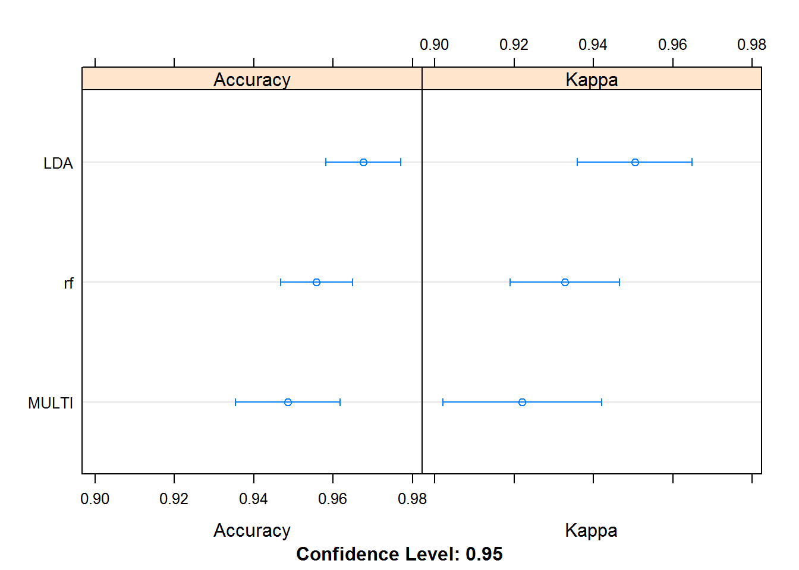

11. Xây dựng mô hình dự báo với caret¶
11.1. Giới thiệu¶
Caret (viết tắt của Classification & Regression) là một package
được sử dụng rộng rãi trong việc xây dựng mô hình dự báo, đặc biệt hữu
dụng khi học và tìm hiểu các concept của machine learning. Tuy
nhiên, khi xây dựng mô hình thực tế sẽ gặp vấn đề về tốc độ.Chương này
chỉ thuần túy mang tính chất giới thiệu về caret trọng xây dựng mô
hình supervised learning.
Trong caret có 1 số hàm cơ bản sau:
createDataPartition: Tạo train & testtrain: xây dựng mô hình, áp dụng cấu trúc gần như đồng nhất giữa các mô hình (đây là điểm mạnh rất lớn của caret)
Mô hình đơn giản:
pkg <- c("caret", "dplyr", "mlbench")
lapply(pkg, library, character.only = T)
## [[1]]
## [1] "caret" "ggplot2" "lattice" "methods" "stats"
## [6] "graphics" "grDevices" "utils" "datasets" "base"
##
## [[2]]
## [1] "dplyr" "caret" "ggplot2" "lattice" "methods"
## [6] "stats" "graphics" "grDevices" "utils" "datasets"
## [11] "base"
##
## [[3]]
## [1] "mlbench" "dplyr" "caret" "ggplot2" "lattice"
## [6] "methods" "stats" "graphics" "grDevices" "utils"
## [11] "datasets" "base"
#Tạo tập train & test
inTrain <- createDataPartition(y = iris$Species,
p = 0.75,
list = F)
train <- iris[inTrain,]
test <- iris[-inTrain,]
#Mô hình
rf.model <- train(Species ~ .,
data = train,
method = "rf",
preProc = c("center", "scale")) #Preprocess: Center & scale
rf.model %>% summary
## Length Class Mode
## call 4 -none- call
## type 1 -none- character
## predicted 114 factor numeric
## err.rate 2000 -none- numeric
## confusion 12 -none- numeric
## votes 342 matrix numeric
## oob.times 114 -none- numeric
## classes 3 -none- character
## importance 4 -none- numeric
## importanceSD 0 -none- NULL
## localImportance 0 -none- NULL
## proximity 0 -none- NULL
## ntree 1 -none- numeric
## mtry 1 -none- numeric
## forest 14 -none- list
## y 114 factor numeric
## test 0 -none- NULL
## inbag 0 -none- NULL
## xNames 4 -none- character
## problemType 1 -none- character
## tuneValue 1 data.frame list
## obsLevels 3 -none- character
Mô hình phức tạp:
#Train & test
inTrain <- createDataPartition(y = iris$Species,
p = 0.75,
list = F)
train <- iris[inTrain,]
test <- iris[-inTrain,]
#Xây dựng mô hình
ctrl <- trainControl(method = "repeatedcv", #repeated cross validate
repeats = 3,
classProbs = TRUE)
rf.model <- train(Species ~ .,
data = train,
method = "rf",
trainControl = ctrl,
metric = "Accuracy",
preProc = c("center", "scale")) #Preprocess: Center & scale
fit.lda <- train(Species ~ .,
data = train,
method = "lda",
trainControl = ctrl,
metric = "Accuracy",
preProc = c("center", "scale")) #Preprocess: Center & scale
fit.multi <- train(Species ~ .,
data = train,
method = "multinom",
trainControl = ctrl,
metric = "Accuracy",
preProc = c("center", "scale")) #Preprocess: Center & scale
## # weights: 18 (10 variable)
## initial value 125.241801
## iter 10 value 6.176570
## iter 20 value 5.341061
## iter 30 value 4.778221
## iter 40 value 4.641302
## iter 50 value 4.365494
## iter 60 value 4.361504
## iter 70 value 4.052398
## iter 80 value 4.050875
## iter 90 value 3.998230
## iter 100 value 3.997568
## final value 3.997568
## stopped after 100 iterations
## # weights: 18 (10 variable)
## initial value 125.241801
## iter 10 value 27.114628
## iter 20 value 20.773516
## final value 20.773491
## converged
## # weights: 18 (10 variable)
## initial value 125.241801
## iter 10 value 6.221362
## iter 20 value 5.465538
## iter 30 value 5.020350
## iter 40 value 4.951651
## iter 50 value 4.933149
## iter 60 value 4.931498
## iter 70 value 4.928467
## iter 80 value 4.928229
## iter 90 value 4.927767
## iter 100 value 4.927738
## final value 4.927738
## stopped after 100 iterations
## # weights: 18 (10 variable)
## initial value 125.241801
## iter 10 value 3.026705
## iter 20 value 1.866203
## iter 30 value 0.923497
## iter 40 value 0.771896
## iter 50 value 0.749492
## iter 60 value 0.559132
## iter 70 value 0.268798
## iter 80 value 0.194487
## iter 90 value 0.175106
## iter 100 value 0.160562
## final value 0.160562
## stopped after 100 iterations
## # weights: 18 (10 variable)
## initial value 125.241801
## iter 10 value 18.985319
## iter 20 value 18.362246
## final value 18.362245
## converged
## # weights: 18 (10 variable)
## initial value 125.241801
## iter 10 value 3.078461
## iter 20 value 2.080872
## iter 30 value 1.541416
## iter 40 value 1.463696
## iter 50 value 1.452629
## iter 60 value 1.422461
## iter 70 value 1.401208
## iter 80 value 1.397582
## iter 90 value 1.394820
## iter 100 value 1.392655
## final value 1.392655
## stopped after 100 iterations
## # weights: 18 (10 variable)
## initial value 125.241801
## iter 10 value 10.442630
## iter 20 value 1.971397
## iter 30 value 0.318888
## iter 40 value 0.207513
## iter 50 value 0.027753
## iter 60 value 0.021888
## iter 70 value 0.020673
## iter 80 value 0.020435
## iter 90 value 0.020058
## iter 100 value 0.019512
## final value 0.019512
## stopped after 100 iterations
## # weights: 18 (10 variable)
## initial value 125.241801
## iter 10 value 20.798333
## iter 20 value 20.121614
## final value 20.121613
## converged
## # weights: 18 (10 variable)
## initial value 125.241801
## iter 10 value 10.459458
## iter 20 value 3.946601
## iter 30 value 2.858295
## iter 40 value 2.666495
## iter 50 value 2.554138
## iter 60 value 2.382597
## iter 70 value 2.289623
## iter 80 value 2.285488
## iter 90 value 2.252438
## iter 100 value 2.251352
## final value 2.251352
## stopped after 100 iterations
## # weights: 18 (10 variable)
## initial value 125.241801
## iter 10 value 6.409820
## iter 20 value 2.438666
## iter 30 value 1.524416
## iter 40 value 1.307778
## iter 50 value 1.202816
## iter 60 value 1.153514
## iter 70 value 1.003864
## iter 80 value 0.976504
## iter 90 value 0.917271
## iter 100 value 0.865057
## final value 0.865057
## stopped after 100 iterations
## # weights: 18 (10 variable)
## initial value 125.241801
## iter 10 value 18.450806
## iter 20 value 18.128582
## final value 18.128581
## converged
## # weights: 18 (10 variable)
## initial value 125.241801
## iter 10 value 6.434735
## iter 20 value 2.696777
## iter 30 value 2.197456
## iter 40 value 2.113034
## iter 50 value 2.028999
## iter 60 value 1.953341
## iter 70 value 1.877024
## iter 80 value 1.871800
## iter 90 value 1.868866
## iter 100 value 1.859438
## final value 1.859438
## stopped after 100 iterations
## # weights: 18 (10 variable)
## initial value 125.241801
## iter 10 value 4.013380
## iter 20 value 3.300112
## iter 30 value 2.421079
## iter 40 value 1.516880
## iter 50 value 0.300459
## iter 60 value 0.146707
## iter 70 value 0.113139
## iter 80 value 0.109961
## iter 90 value 0.076279
## iter 100 value 0.071565
## final value 0.071565
## stopped after 100 iterations
## # weights: 18 (10 variable)
## initial value 125.241801
## iter 10 value 17.592085
## iter 20 value 17.444398
## iter 20 value 17.444398
## iter 20 value 17.444398
## final value 17.444398
## converged
## # weights: 18 (10 variable)
## initial value 125.241801
## iter 10 value 4.062540
## iter 20 value 3.408424
## iter 30 value 2.675189
## iter 40 value 1.965960
## iter 50 value 1.630389
## iter 60 value 1.605742
## iter 70 value 1.599344
## iter 80 value 1.591235
## iter 90 value 1.585818
## iter 100 value 1.580624
## final value 1.580624
## stopped after 100 iterations
## # weights: 18 (10 variable)
## initial value 125.241801
## iter 10 value 9.154722
## iter 20 value 0.345289
## iter 30 value 0.021335
## iter 40 value 0.003976
## iter 50 value 0.002815
## iter 60 value 0.001679
## iter 70 value 0.001475
## iter 80 value 0.000833
## iter 90 value 0.000793
## iter 100 value 0.000743
## final value 0.000743
## stopped after 100 iterations
## # weights: 18 (10 variable)
## initial value 125.241801
## iter 10 value 20.937251
## iter 20 value 20.328498
## final value 20.328497
## converged
## # weights: 18 (10 variable)
## initial value 125.241801
## iter 10 value 9.175117
## iter 20 value 1.358223
## iter 30 value 0.969741
## iter 40 value 0.913134
## iter 50 value 0.861629
## iter 60 value 0.816820
## iter 70 value 0.778065
## iter 80 value 0.774683
## iter 90 value 0.768872
## iter 100 value 0.764491
## final value 0.764491
## stopped after 100 iterations
## # weights: 18 (10 variable)
## initial value 125.241801
## iter 10 value 5.985223
## iter 20 value 0.188201
## iter 30 value 0.014862
## iter 40 value 0.007541
## iter 50 value 0.006478
## iter 60 value 0.005331
## iter 70 value 0.004105
## iter 80 value 0.003909
## iter 90 value 0.003436
## iter 100 value 0.003362
## final value 0.003362
## stopped after 100 iterations
## # weights: 18 (10 variable)
## initial value 125.241801
## iter 10 value 17.800007
## final value 17.634138
## converged
## # weights: 18 (10 variable)
## initial value 125.241801
## iter 10 value 6.012575
## iter 20 value 1.213522
## iter 30 value 1.039497
## iter 40 value 0.993055
## iter 50 value 0.969230
## iter 60 value 0.927397
## iter 70 value 0.861154
## iter 80 value 0.856888
## iter 90 value 0.854375
## iter 100 value 0.852510
## final value 0.852510
## stopped after 100 iterations
## # weights: 18 (10 variable)
## initial value 125.241801
## iter 10 value 8.064391
## iter 20 value 5.178569
## iter 30 value 5.132698
## iter 40 value 5.117701
## iter 50 value 5.116423
## iter 60 value 5.116321
## final value 5.116315
## converged
## # weights: 18 (10 variable)
## initial value 125.241801
## iter 10 value 19.758999
## iter 20 value 19.427449
## final value 19.427449
## converged
## # weights: 18 (10 variable)
## initial value 125.241801
## iter 10 value 8.092545
## iter 20 value 5.265086
## iter 30 value 5.225933
## iter 40 value 5.213166
## iter 50 value 5.210079
## iter 60 value 5.207047
## iter 70 value 5.206066
## iter 80 value 5.204485
## iter 90 value 5.202816
## iter 100 value 5.201612
## final value 5.201612
## stopped after 100 iterations
## # weights: 18 (10 variable)
## initial value 125.241801
## iter 10 value 5.794120
## iter 20 value 4.103309
## iter 30 value 3.641266
## iter 40 value 0.527809
## iter 50 value 0.045513
## iter 60 value 0.042125
## iter 70 value 0.040490
## iter 80 value 0.037526
## iter 90 value 0.037342
## iter 100 value 0.037315
## final value 0.037315
## stopped after 100 iterations
## # weights: 18 (10 variable)
## initial value 125.241801
## iter 10 value 22.038344
## iter 20 value 21.254531
## final value 21.254531
## converged
## # weights: 18 (10 variable)
## initial value 125.241801
## iter 10 value 5.839575
## iter 20 value 4.341468
## iter 30 value 4.024860
## iter 40 value 3.979235
## iter 50 value 3.968696
## iter 60 value 3.939459
## iter 70 value 3.926564
## iter 80 value 3.926097
## iter 90 value 3.924382
## iter 100 value 3.923744
## final value 3.923744
## stopped after 100 iterations
## # weights: 18 (10 variable)
## initial value 125.241801
## iter 10 value 5.681941
## iter 20 value 4.246581
## iter 30 value 2.975122
## iter 40 value 2.736340
## iter 50 value 1.558157
## iter 60 value 1.505793
## iter 70 value 1.411722
## iter 80 value 1.357959
## iter 90 value 1.209468
## iter 100 value 1.134581
## final value 1.134581
## stopped after 100 iterations
## # weights: 18 (10 variable)
## initial value 125.241801
## iter 10 value 20.508767
## iter 20 value 20.019049
## final value 20.019049
## converged
## # weights: 18 (10 variable)
## initial value 125.241801
## iter 10 value 5.727211
## iter 20 value 4.417710
## iter 30 value 3.536318
## iter 40 value 3.346961
## iter 50 value 3.281763
## iter 60 value 3.234644
## iter 70 value 3.195353
## iter 80 value 3.184344
## iter 90 value 3.182614
## iter 100 value 3.180034
## final value 3.180034
## stopped after 100 iterations
## # weights: 18 (10 variable)
## initial value 125.241801
## iter 10 value 4.343479
## iter 20 value 3.436159
## iter 30 value 2.187951
## iter 40 value 2.062865
## iter 50 value 1.929782
## iter 60 value 1.857871
## iter 70 value 1.375510
## iter 80 value 1.321750
## iter 90 value 1.287253
## iter 100 value 1.255095
## final value 1.255095
## stopped after 100 iterations
## # weights: 18 (10 variable)
## initial value 125.241801
## iter 10 value 20.087721
## iter 20 value 19.931552
## iter 20 value 19.931552
## iter 20 value 19.931552
## final value 19.931552
## converged
## # weights: 18 (10 variable)
## initial value 125.241801
## iter 10 value 4.404276
## iter 20 value 3.601415
## iter 30 value 3.245441
## iter 40 value 3.203369
## iter 50 value 3.167227
## iter 60 value 3.120101
## iter 70 value 3.095445
## iter 80 value 3.085733
## iter 90 value 3.078655
## iter 100 value 3.073284
## final value 3.073284
## stopped after 100 iterations
## # weights: 18 (10 variable)
## initial value 125.241801
## iter 10 value 10.137304
## iter 20 value 0.098722
## iter 30 value 0.017566
## iter 40 value 0.015084
## iter 50 value 0.006000
## iter 60 value 0.005127
## iter 70 value 0.004391
## iter 80 value 0.004234
## iter 90 value 0.002741
## iter 100 value 0.002711
## final value 0.002711
## stopped after 100 iterations
## # weights: 18 (10 variable)
## initial value 125.241801
## iter 10 value 19.787810
## iter 20 value 18.647934
## final value 18.647933
## converged
## # weights: 18 (10 variable)
## initial value 125.241801
## iter 10 value 10.153408
## iter 20 value 0.950217
## iter 30 value 0.883673
## iter 40 value 0.808340
## iter 50 value 0.797202
## iter 60 value 0.749538
## iter 70 value 0.716719
## iter 80 value 0.696124
## iter 90 value 0.693784
## iter 100 value 0.684138
## final value 0.684138
## stopped after 100 iterations
## # weights: 18 (10 variable)
## initial value 125.241801
## iter 10 value 10.414742
## iter 20 value 5.013869
## iter 30 value 4.154269
## iter 40 value 4.045036
## iter 50 value 4.018613
## iter 60 value 3.918570
## iter 70 value 3.765089
## iter 80 value 3.752942
## iter 90 value 3.733236
## iter 100 value 3.725114
## final value 3.725114
## stopped after 100 iterations
## # weights: 18 (10 variable)
## initial value 125.241801
## iter 10 value 20.625836
## iter 20 value 19.692398
## iter 20 value 19.692398
## iter 20 value 19.692398
## final value 19.692398
## converged
## # weights: 18 (10 variable)
## initial value 125.241801
## iter 10 value 10.431418
## iter 20 value 5.142600
## iter 30 value 4.658652
## iter 40 value 4.576101
## iter 50 value 4.438865
## iter 60 value 4.432239
## iter 70 value 4.417833
## iter 80 value 4.414917
## iter 90 value 4.411650
## iter 100 value 4.410447
## final value 4.410447
## stopped after 100 iterations
## # weights: 18 (10 variable)
## initial value 125.241801
## iter 10 value 3.385860
## iter 20 value 0.010911
## iter 30 value 0.001706
## iter 40 value 0.001012
## iter 50 value 0.000740
## iter 60 value 0.000704
## iter 70 value 0.000609
## iter 80 value 0.000404
## iter 90 value 0.000326
## iter 100 value 0.000261
## final value 0.000261
## stopped after 100 iterations
## # weights: 18 (10 variable)
## initial value 125.241801
## iter 10 value 15.580084
## iter 20 value 15.421268
## final value 15.421267
## converged
## # weights: 18 (10 variable)
## initial value 125.241801
## iter 10 value 3.419283
## iter 20 value 0.433849
## iter 30 value 0.363252
## iter 40 value 0.344132
## iter 50 value 0.313760
## iter 60 value 0.304172
## iter 70 value 0.282828
## iter 80 value 0.278172
## iter 90 value 0.276230
## iter 100 value 0.273982
## final value 0.273982
## stopped after 100 iterations
## # weights: 18 (10 variable)
## initial value 125.241801
## iter 10 value 1.799919
## iter 20 value 0.642055
## iter 30 value 0.196554
## iter 40 value 0.066964
## iter 50 value 0.058042
## iter 60 value 0.043480
## iter 70 value 0.040586
## iter 80 value 0.037745
## iter 90 value 0.029316
## iter 100 value 0.027160
## final value 0.027160
## stopped after 100 iterations
## # weights: 18 (10 variable)
## initial value 125.241801
## iter 10 value 18.691779
## iter 20 value 16.613514
## final value 16.613513
## converged
## # weights: 18 (10 variable)
## initial value 125.241801
## iter 10 value 1.854280
## iter 20 value 0.914366
## iter 30 value 0.611080
## iter 40 value 0.561045
## iter 50 value 0.556407
## iter 60 value 0.551178
## iter 70 value 0.550070
## iter 80 value 0.548636
## iter 90 value 0.547935
## iter 100 value 0.547324
## final value 0.547324
## stopped after 100 iterations
## # weights: 18 (10 variable)
## initial value 125.241801
## iter 10 value 10.518605
## iter 20 value 0.194840
## iter 30 value 0.039807
## iter 40 value 0.025768
## iter 50 value 0.020933
## iter 60 value 0.013461
## iter 70 value 0.010176
## iter 80 value 0.010135
## iter 90 value 0.010063
## iter 100 value 0.009245
## final value 0.009245
## stopped after 100 iterations
## # weights: 18 (10 variable)
## initial value 125.241801
## iter 10 value 22.575972
## iter 20 value 22.208531
## final value 22.208531
## converged
## # weights: 18 (10 variable)
## initial value 125.241801
## iter 10 value 10.543746
## iter 20 value 1.946736
## iter 30 value 1.858828
## iter 40 value 1.799531
## iter 50 value 1.787093
## iter 60 value 1.757268
## iter 70 value 1.737547
## iter 80 value 1.723744
## iter 90 value 1.720960
## iter 100 value 1.717537
## final value 1.717537
## stopped after 100 iterations
## # weights: 18 (10 variable)
## initial value 125.241801
## iter 10 value 3.862422
## iter 20 value 0.014472
## iter 30 value 0.002966
## iter 40 value 0.000834
## iter 50 value 0.000624
## iter 60 value 0.000405
## iter 70 value 0.000392
## iter 80 value 0.000238
## iter 90 value 0.000204
## iter 100 value 0.000160
## final value 0.000160
## stopped after 100 iterations
## # weights: 18 (10 variable)
## initial value 125.241801
## iter 10 value 15.727185
## iter 20 value 15.603029
## iter 20 value 15.603029
## iter 20 value 15.603029
## final value 15.603029
## converged
## # weights: 18 (10 variable)
## initial value 125.241801
## iter 10 value 3.885052
## iter 20 value 0.321954
## iter 30 value 0.277975
## iter 40 value 0.255690
## iter 50 value 0.245302
## iter 60 value 0.237720
## iter 70 value 0.233685
## iter 80 value 0.232290
## iter 90 value 0.226223
## iter 100 value 0.225617
## final value 0.225617
## stopped after 100 iterations
## # weights: 18 (10 variable)
## initial value 125.241801
## iter 10 value 3.384080
## iter 20 value 2.511031
## iter 30 value 2.166650
## iter 40 value 1.351716
## iter 50 value 0.906749
## iter 60 value 0.705780
## iter 70 value 0.703010
## iter 80 value 0.655348
## iter 90 value 0.281100
## iter 100 value 0.182635
## final value 0.182635
## stopped after 100 iterations
## # weights: 18 (10 variable)
## initial value 125.241801
## iter 10 value 19.461298
## iter 20 value 17.638899
## final value 17.638897
## converged
## # weights: 18 (10 variable)
## initial value 125.241801
## iter 10 value 3.430241
## iter 20 value 2.643057
## iter 30 value 2.439236
## iter 40 value 2.371260
## iter 50 value 2.361813
## iter 60 value 2.326110
## iter 70 value 2.305013
## iter 80 value 2.303377
## iter 90 value 2.302917
## iter 100 value 2.302207
## final value 2.302207
## stopped after 100 iterations
## # weights: 18 (10 variable)
## initial value 125.241801
## iter 10 value 6.197876
## iter 20 value 6.095849
## iter 30 value 6.056736
## iter 40 value 6.044429
## iter 50 value 6.042804
## iter 60 value 6.042788
## iter 70 value 6.042626
## final value 6.042625
## converged
## # weights: 18 (10 variable)
## initial value 125.241801
## iter 10 value 20.497584
## iter 20 value 19.919930
## final value 19.919929
## converged
## # weights: 18 (10 variable)
## initial value 125.241801
## iter 10 value 6.243954
## iter 20 value 6.152978
## iter 30 value 6.121176
## iter 40 value 6.115733
## iter 50 value 6.115472
## iter 60 value 6.115322
## iter 70 value 6.115066
## iter 80 value 6.115057
## iter 90 value 6.115037
## iter 100 value 6.115030
## final value 6.115030
## stopped after 100 iterations
## # weights: 18 (10 variable)
## initial value 125.241801
## iter 10 value 7.053560
## iter 20 value 4.473896
## iter 30 value 4.423906
## iter 40 value 4.416190
## iter 50 value 4.413294
## iter 60 value 4.412730
## iter 70 value 4.411702
## iter 80 value 4.411548
## iter 90 value 4.411373
## iter 100 value 4.411188
## final value 4.411188
## stopped after 100 iterations
## # weights: 18 (10 variable)
## initial value 125.241801
## iter 10 value 19.176513
## iter 20 value 18.970278
## iter 20 value 18.970277
## iter 20 value 18.970277
## final value 18.970277
## converged
## # weights: 18 (10 variable)
## initial value 125.241801
## iter 10 value 7.079494
## iter 20 value 4.567783
## iter 30 value 4.526056
## iter 40 value 4.518037
## iter 50 value 4.515478
## iter 60 value 4.513350
## iter 70 value 4.510088
## iter 80 value 4.508878
## iter 90 value 4.508439
## iter 100 value 4.507504
## final value 4.507504
## stopped after 100 iterations
## # weights: 18 (10 variable)
## initial value 125.241801
## iter 10 value 7.916037
## iter 20 value 1.959222
## iter 30 value 0.722919
## iter 40 value 0.632232
## iter 50 value 0.624568
## iter 60 value 0.532305
## iter 70 value 0.482408
## iter 80 value 0.470478
## iter 90 value 0.457533
## iter 100 value 0.446186
## final value 0.446186
## stopped after 100 iterations
## # weights: 18 (10 variable)
## initial value 125.241801
## iter 10 value 18.206453
## iter 20 value 17.788612
## final value 17.788611
## converged
## # weights: 18 (10 variable)
## initial value 125.241801
## iter 10 value 7.934039
## iter 20 value 2.891377
## iter 30 value 2.852060
## iter 40 value 2.797591
## iter 50 value 2.792562
## iter 60 value 2.757872
## iter 70 value 2.744258
## iter 80 value 2.736582
## iter 90 value 2.733009
## iter 100 value 2.725634
## final value 2.725634
## stopped after 100 iterations
## # weights: 18 (10 variable)
## initial value 125.241801
## iter 10 value 6.817112
## iter 20 value 0.075736
## iter 30 value 0.016001
## iter 40 value 0.002923
## iter 50 value 0.001730
## iter 60 value 0.001523
## iter 70 value 0.001304
## iter 80 value 0.001225
## iter 90 value 0.000792
## iter 100 value 0.000733
## final value 0.000733
## stopped after 100 iterations
## # weights: 18 (10 variable)
## initial value 125.241801
## iter 10 value 19.418005
## final value 19.110079
## converged
## # weights: 18 (10 variable)
## initial value 125.241801
## iter 10 value 6.845305
## iter 20 value 0.990769
## iter 30 value 0.804644
## iter 40 value 0.739128
## iter 50 value 0.727589
## iter 60 value 0.673328
## iter 70 value 0.638444
## iter 80 value 0.626744
## iter 90 value 0.623631
## iter 100 value 0.614244
## final value 0.614244
## stopped after 100 iterations
## # weights: 18 (10 variable)
## initial value 125.241801
## iter 10 value 2.578148
## iter 20 value 1.103958
## iter 30 value 0.412362
## iter 40 value 0.110806
## iter 50 value 0.100675
## iter 60 value 0.090952
## iter 70 value 0.058322
## iter 80 value 0.054836
## iter 90 value 0.052897
## iter 100 value 0.042801
## final value 0.042801
## stopped after 100 iterations
## # weights: 18 (10 variable)
## initial value 125.241801
## iter 10 value 16.668806
## iter 20 value 15.748596
## final value 15.748595
## converged
## # weights: 18 (10 variable)
## initial value 125.241801
## iter 10 value 2.629536
## iter 20 value 1.480691
## iter 30 value 1.106003
## iter 40 value 0.936605
## iter 50 value 0.923092
## iter 60 value 0.903206
## iter 70 value 0.896825
## iter 80 value 0.895602
## iter 90 value 0.895271
## iter 100 value 0.894722
## final value 0.894722
## stopped after 100 iterations
## # weights: 18 (10 variable)
## initial value 125.241801
## iter 10 value 6.349289
## iter 20 value 0.047378
## iter 30 value 0.005655
## iter 40 value 0.004342
## iter 50 value 0.003552
## iter 60 value 0.002990
## iter 70 value 0.002296
## iter 80 value 0.002254
## iter 90 value 0.001722
## iter 100 value 0.001688
## final value 0.001688
## stopped after 100 iterations
## # weights: 18 (10 variable)
## initial value 125.241801
## iter 10 value 18.291748
## iter 20 value 17.643578
## final value 17.643577
## converged
## # weights: 18 (10 variable)
## initial value 125.241801
## iter 10 value 6.369603
## iter 20 value 0.496882
## iter 30 value 0.458508
## iter 40 value 0.445248
## iter 50 value 0.421904
## iter 60 value 0.418124
## iter 70 value 0.417763
## iter 80 value 0.417257
## iter 90 value 0.416451
## iter 100 value 0.416095
## final value 0.416095
## stopped after 100 iterations
## # weights: 18 (10 variable)
## initial value 125.241801
## iter 10 value 2.408374
## iter 20 value 1.613814
## iter 30 value 1.030583
## iter 40 value 0.538519
## iter 50 value 0.456572
## iter 60 value 0.382378
## iter 70 value 0.255440
## iter 80 value 0.239926
## iter 90 value 0.185494
## iter 100 value 0.137846
## final value 0.137846
## stopped after 100 iterations
## # weights: 18 (10 variable)
## initial value 125.241801
## iter 10 value 18.423398
## final value 18.227066
## converged
## # weights: 18 (10 variable)
## initial value 125.241801
## iter 10 value 2.468938
## iter 20 value 1.734914
## iter 30 value 1.252585
## iter 40 value 1.064920
## iter 50 value 0.990976
## iter 60 value 0.968958
## iter 70 value 0.961054
## iter 80 value 0.951385
## iter 90 value 0.944826
## iter 100 value 0.940981
## final value 0.940981
## stopped after 100 iterations
## # weights: 18 (10 variable)
## initial value 125.241801
## iter 10 value 20.325785
## iter 20 value 19.765691
## final value 19.765690
## converged
#So sánh 2 mô hình
boosting_results <- resamples(list(rf=rf.model, LDA=fit.lda, MULTI = fit.multi))
summary(boosting_results)
##
## Call:
## summary.resamples(object = boosting_results)
##
## Models: rf, LDA, MULTI
## Number of resamples: 25
##
## Accuracy
## Min. 1st Qu. Median Mean 3rd Qu. Max. NA's
## rf 0.8974359 0.9500000 0.9555556 0.9558570 0.9743590 0.9787234 0
## LDA 0.9250000 0.9512195 0.9736842 0.9676165 0.9767442 1.0000000 0
## MULTI 0.8888889 0.9411765 0.9523810 0.9485925 0.9767442 1.0000000 0
##
## Kappa
## Min. 1st Qu. Median Mean 3rd Qu. Max. NA's
## rf 0.8436874 0.9242424 0.9332344 0.9327520 0.9615385 0.9676531 0
## LDA 0.8863636 0.9249531 0.9604579 0.9503733 0.9646672 1.0000000 0
## MULTI 0.8301887 0.9100529 0.9274611 0.9220380 0.9650974 1.0000000 0
dotplot(boosting_results)

#Test RF
predict_result <- predict(rf.model, test)
confusionMatrix(predict_result, test$Species)
## Confusion Matrix and Statistics
##
## Reference
## Prediction setosa versicolor virginica
## setosa 12 0 0
## versicolor 0 10 1
## virginica 0 2 11
##
## Overall Statistics
##
## Accuracy : 0.9167
## 95% CI : (0.7753, 0.9825)
## No Information Rate : 0.3333
## P-Value [Acc > NIR] : 3.978e-13
##
## Kappa : 0.875
## Mcnemar's Test P-Value : NA
##
## Statistics by Class:
##
## Class: setosa Class: versicolor Class: virginica
## Sensitivity 1.0000 0.8333 0.9167
## Specificity 1.0000 0.9583 0.9167
## Pos Pred Value 1.0000 0.9091 0.8462
## Neg Pred Value 1.0000 0.9200 0.9565
## Prevalence 0.3333 0.3333 0.3333
## Detection Rate 0.3333 0.2778 0.3056
## Detection Prevalence 0.3333 0.3056 0.3611
## Balanced Accuracy 1.0000 0.8958 0.9167
#Test LDA
predict_result <- predict(fit.lda, test)
confusionMatrix(predict_result, test$Species)
## Confusion Matrix and Statistics
##
## Reference
## Prediction setosa versicolor virginica
## setosa 12 0 0
## versicolor 0 12 0
## virginica 0 0 12
##
## Overall Statistics
##
## Accuracy : 1
## 95% CI : (0.9026, 1)
## No Information Rate : 0.3333
## P-Value [Acc > NIR] : < 2.2e-16
##
## Kappa : 1
## Mcnemar's Test P-Value : NA
##
## Statistics by Class:
##
## Class: setosa Class: versicolor Class: virginica
## Sensitivity 1.0000 1.0000 1.0000
## Specificity 1.0000 1.0000 1.0000
## Pos Pred Value 1.0000 1.0000 1.0000
## Neg Pred Value 1.0000 1.0000 1.0000
## Prevalence 0.3333 0.3333 0.3333
## Detection Rate 0.3333 0.3333 0.3333
## Detection Prevalence 0.3333 0.3333 0.3333
## Balanced Accuracy 1.0000 1.0000 1.0000
11.2. Tuning parameter¶
Khi tối ưu hóa các tham số, ta nên dùng cross validation hoặc boostrap (quy tắc 632)
set.seed(998)
library(mlbench)
data(Sonar)
inTraining <- createDataPartition(Sonar$Class,
p = 0.75,
list = F)
training <- Sonar[inTraining,]
testing <- Sonar[-inTraining,]
fitControl <- trainControl(method = "repeatedcv",
number = 2,
repeats = 2,
classProbs = T,
summaryFunction = twoClassSummary)
xgb.model <- train(Class ~ .,
data = training,
method = "xgbTree",
trControl = fitControl,
verbose = F,
metric = "ROC")
#Kết quả mô hình
xgb.model
## eXtreme Gradient Boosting
##
## 157 samples
## 60 predictor
## 2 classes: 'M', 'R'
##
## No pre-processing
## Resampling: Cross-Validated (2 fold, repeated 2 times)
## Summary of sample sizes: 79, 78, 78, 79
## Resampling results across tuning parameters:
##
## eta max_depth colsample_bytree nrounds ROC Sens
## 0.3 1 0.6 50 0.8497873 0.7857143
## 0.3 1 0.6 100 0.8479819 0.7797619
## 0.3 1 0.6 150 0.8464268 0.7678571
## 0.3 1 0.8 50 0.8522183 0.7976190
## 0.3 1 0.8 100 0.8489472 0.7857143
## 0.3 1 0.8 150 0.8444605 0.7619048
## 0.3 2 0.6 50 0.8628986 0.7797619
## 0.3 2 0.6 100 0.8588008 0.7678571
## 0.3 2 0.6 150 0.8588008 0.7678571
## 0.3 2 0.8 50 0.8462614 0.7440476
## 0.3 2 0.8 100 0.8500867 0.7738095
## 0.3 2 0.8 150 0.8500867 0.7738095
## 0.3 3 0.6 50 0.8547431 0.8273810
## 0.3 3 0.6 100 0.8552124 0.8154762
## 0.3 3 0.6 150 0.8552124 0.8154762
## 0.3 3 0.8 50 0.8587650 0.8273810
## 0.3 3 0.8 100 0.8598554 0.8333333
## 0.3 3 0.8 150 0.8598554 0.8333333
## 0.4 1 0.6 50 0.8459710 0.7619048
## 0.4 1 0.6 100 0.8458637 0.7678571
## 0.4 1 0.6 150 0.8440673 0.7559524
## 0.4 1 0.8 50 0.8519993 0.7797619
## 0.4 1 0.8 100 0.8518519 0.7797619
## 0.4 1 0.8 150 0.8515078 0.7678571
## 0.4 2 0.6 50 0.8654592 0.8035714
## 0.4 2 0.6 100 0.8666926 0.7976190
## 0.4 2 0.6 150 0.8666926 0.7976190
## 0.4 2 0.8 50 0.8608921 0.8035714
## 0.4 2 0.8 100 0.8607089 0.8095238
## 0.4 2 0.8 150 0.8607089 0.8095238
## 0.4 3 0.6 50 0.8417122 0.7797619
## 0.4 3 0.6 100 0.8405593 0.7678571
## 0.4 3 0.6 150 0.8405593 0.7678571
## 0.4 3 0.8 50 0.8585058 0.7976190
## 0.4 3 0.8 100 0.8576970 0.8035714
## 0.4 3 0.8 150 0.8576970 0.8035714
## Spec
## 0.7464339
## 0.7464339
## 0.7603228
## 0.7466216
## 0.7329204
## 0.7468093
## 0.7605105
## 0.7539414
## 0.7539414
## 0.7745871
## 0.7539414
## 0.7539414
## 0.7331081
## 0.7331081
## 0.7331081
## 0.7336712
## 0.7404279
## 0.7404279
## 0.7122748
## 0.7601351
## 0.7466216
## 0.7263514
## 0.7533784
## 0.7670796
## 0.7610736
## 0.7610736
## 0.7610736
## 0.7327327
## 0.7327327
## 0.7327327
## 0.7263514
## 0.7402402
## 0.7402402
## 0.7533784
## 0.7533784
## 0.7533784
##
## Tuning parameter 'gamma' was held constant at a value of 0
##
## Tuning parameter 'min_child_weight' was held constant at a value of 1
## ROC was used to select the optimal model using the largest value.
## The final values used for the model were nrounds = 100, max_depth = 2,
## eta = 0.4, gamma = 0, colsample_bytree = 0.6 and min_child_weight = 1.
#Confusion Matrix tập testing
confusionMatrix(predict(xgb.model, testing), testing$Class)
## Confusion Matrix and Statistics
##
## Reference
## Prediction M R
## M 24 2
## R 3 22
##
## Accuracy : 0.902
## 95% CI : (0.7859, 0.9674)
## No Information Rate : 0.5294
## P-Value [Acc > NIR] : 1.209e-08
##
## Kappa : 0.8037
## Mcnemar's Test P-Value : 1
##
## Sensitivity : 0.8889
## Specificity : 0.9167
## Pos Pred Value : 0.9231
## Neg Pred Value : 0.8800
## Prevalence : 0.5294
## Detection Rate : 0.4706
## Detection Prevalence : 0.5098
## Balanced Accuracy : 0.9028
##
## 'Positive' Class : M
##
#Lấy kết quả dạng xác suất
predict(xgb.model, head(testing), type = "prob")
## M R
## 1 0.0681190491 0.931880951
## 2 0.0031862601 0.996813740
## 3 0.0003743432 0.999625657
## 4 0.0203228425 0.979677157
## 5 0.9945857525 0.005414248
## 6 0.5634216666 0.436578333